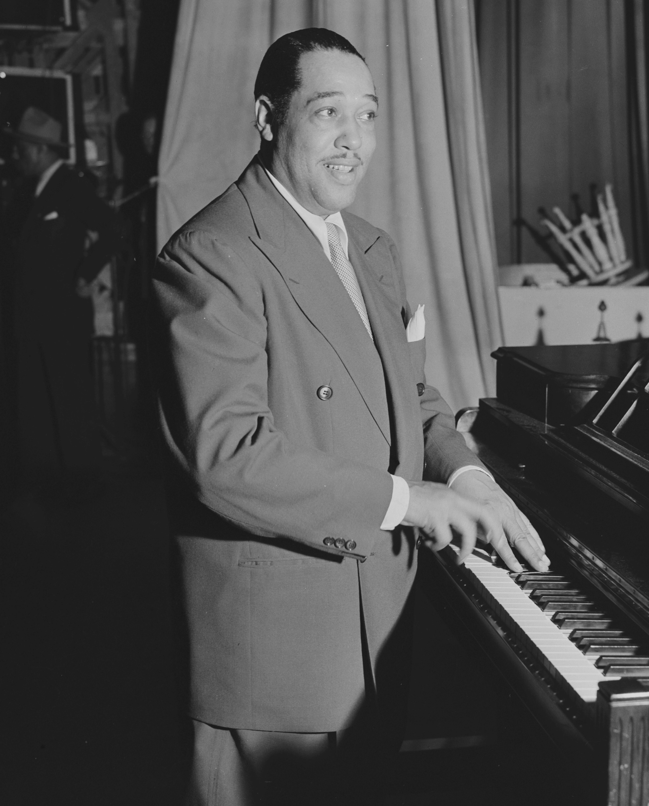
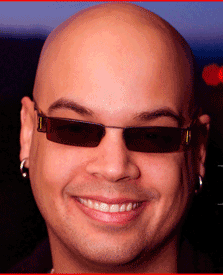

Biography

Edward Kennedy “Duke” Ellington was born on April 29th, 1899, in Washington, D.C. The son of two pianists, Edward was raised in a home that brimmed with music, culture, and racial pride. His personal dignity and easy grace at an early age led his peers to feel that he should have a title: they christened him “Duke,” a mark of nobility that would stay with him throughout his life. Ellington married his high school sweetheart, Edna Thompson, at the age of 19, and their only son, Mercer, was born a year later. (Mercer would later go on to become a musician and composer himself: he played in the Duke Ellington Orchestra, worked as his father’s business manager, and led the orchestra after his father’s death).
As a young man, Duke first began honing his musical talents by emulating the stride pianists he heard playing in bars, poolrooms, and cafes. He later played these same types of venues himself with his first band, The Duke’s Serenaders, a successful venture that achieved the remarkable feat of playing for both black and white audiences. Soon afterwards, Duke Ellington moved his budding career to New York City and settled in Harlem, where he would become a key part of the artistic phenomenon known as the Harlem Renaissance. His longstanding engagement at the famous Cotton Club made him a superstar in the jazz world. It was there, during the early 1930s, that Duke began shaping the orchestra that would eventually transform the sound of jazz music in America.
Through the 1930s, Ellington and his orchestra built a strong foundation for themselves both in the American musical scene and abroad. In addition to recording numerous records and touring regularly throughout the States, Ellington also made successful trips to Europe and filmed several musical movies with vocalists like Billie Holiday and Ivie Anderson. However, he still struggled to compete with swing bandleaders like Benny Goodman and Glenn Miller’s, whose sound was more commercially successful but less artistically and emotionally complex than Ellington’s pieces.
A turning point came in 1939, when Ellington met Billy “Swee’ Pea” Strayhorn. Originally hired as a lyricist, Strayhorn eventually contributed original music, lyrics, and arrangements to the Ellington orchestra’s repertoire, as well as standing in for Duke and conducting in his stead if he was unavailable. Some of Duke Ellington’s most famous pieces were written by Strayhorn, including “Take the ‘A’ Train”, “Chelsea Bridge”, and “Satin Doll”. Ellington and Strayhorn had an extremely close working relationship, as well as a deep personal friendship: in his autobiography, Music is My Mistress, Duke referred to Strayhorn as "my right arm, my left arm, all the eyes in the back of my head, my brain waves in his head, and his inmine".
Duke Ellington continued to expand and develop his musical style throughout the course of the twentieth century, moving beyond three-minute piece and creating lengthier jazz compositions, such as 1943’s “Black, Brown, and Beige”, that would eventually become his trademark. These extended suites exalted, mythologized and re-contextualized the African-American experience on a grand scale, and kept him connected to the African-American community even as he remained popular with wider American audiences. When asked what inspired him to write, Ellington replied, "My men and my race are the inspiration of my work. I try to catch the character and mood and feeling of my people".
Despite his insistence on privacy, Ellington cultivated a larger-than- life public persona that allowed him to transcend typical boundaries and make a place for himself as an internationally acclaimed artist.
In the later years of his career, Ellington continued to tour with his orchestra, playing everywhere from local Elks clubs to live jazz festivals in the United States and internationally. He also wrote and recorded new suites with Strayhorn, as well as scoring several Hollywood movies (becoming one of the first African-Americans to write an entire instrumental score for feature-length films). Ellington also performed publicly with musicians who had previously been “rivals” in the past, such as Count Basie and Louis Armstrong. Towards the end of his life, Ellington composed and performed his “Sacred Concerts,” popular meldings of jazz and church music.
Over the course of his life, Duke Ellington proved to be one of America’s most prolific and innovative musical geniuses. He was certainly recognized as such: he won thirteen Grammy Awards—including three after his death—the Pulitzer Prize. and was presented with the Presidential Medal of Freedom in 1969. But Duke Ellington’s impact is measured not in awards, but in the thousands of musicians whom he inspired, in the endless works of his that are a part of our history and our culture—“Mood Indigo”, “Take the ‘A’ Train”, “It Don’t Mean A Thing (If It Ain’t Got That Swing)”—and in the new worlds of composition and creation that he opened for young songwriters to explore. His passion and brilliance burned brightly for almost a century, and he will be remembered for far longer than that.
Duke Ellington died of lung cancer and pneumonia on May 24, 1974, a month after his 75th birthday, and is buried in Woodlawn Cemetery in New York City. At his funeral, which was attended by over 12,000 people at the Cathedral of St. John the Divine, Ella Fitzgerald summed up the occasion: "It's a very sad day...a genius has passed."

Paul Ellington is the grandson of the Duke Ellington.
Further reading about Duke Ellington:
Music is My Mistress, Duke Ellington (Da Capo Press, 1973)
Duke Ellington In Person, Mercer Ellington (Da Capo Press, 1978)
The World of Duke Ellington, Stanley Dance (Charles Scribner’s So1970)
The Duke Ellington Reader, edited by Mark Tucker (Oxford UniversPress, 1993)
The Life and Genius of Duke Ellington, John Edward Hasse (Simon &aSchuster, 1993)
Duke Ellington’s America, Harvey G. Cohen (University of ChicPress, 2010)
The Ellington Century, David Schiff (University of California Pre2012)
Duke: A Life of Duke Ellington, Terry Teachout (Penguin Group, 2013)
"The only thing that counts is the emotional effect on the listener. Somehow, I suspect that if Shakespeare were alive today, he might be a jazz fan himself—he’d appreciate the combination of team spirit and informality, of academic knowledge and humor, of all the elements that go into a great jazz performance." - Duke Ellington